Bài 10: sử dụng-tìm-thay thế
Bài 10: Sử dụng Tìm & Thay thế
/en/excel/working-with-multiple-worksheets/content/
Giới thiệu
Khi làm việc với nhiều dữ liệu trong Excel, việc xác định thông tin cụ thể có thể khó khăn và tốn thời gian. Bạn có thể dễ dàng tìm kiếm sổ làm việc của mình bằng tính năngTìm, tính năng này cũng cho phép bạn sửa đổi nội dung bằng tính năngThay thế.
Xem video bên dưới để tìm hiểu thêm về cách sử dụng Tìm và Thay thế.
Để tìm nội dung ô:
Trong ví dụ của chúng tôi, chúng tôi sẽ sử dụng lệnh Tìm để định vị một bộ phận cụ thể trong danh sách này.
- Từ tabTrang chủ, hãy nhấp vào lệnhTìm và chọn, sau đó chọnTìmtừ trình đơn thả xuống.
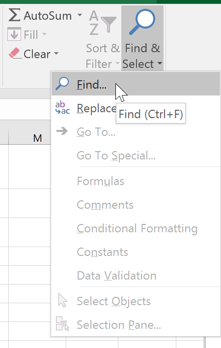
2. Hộp thoạiTìm và Thay thếsẽ xuất hiện. Nhậpnội dungbạn muốn tìm. Trong ví dụ của chúng tôi, chúng tôi sẽ nhập tên của bộ phận. 3. Nhấp vàoTìm tiếp. Nếu tìm thấy nội dung, ô chứa nội dung đó sẽ đượcchọn.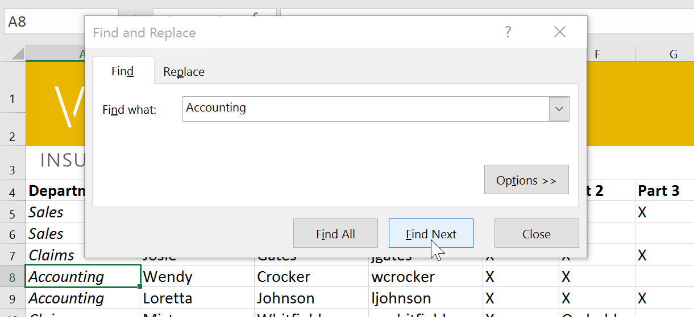
4. Nhấp vàoTìm tiếpđể tìm thêm trường hợp hoặcTìm tất cảđể xem mọi trường hợp của cụm từ tìm kiếm.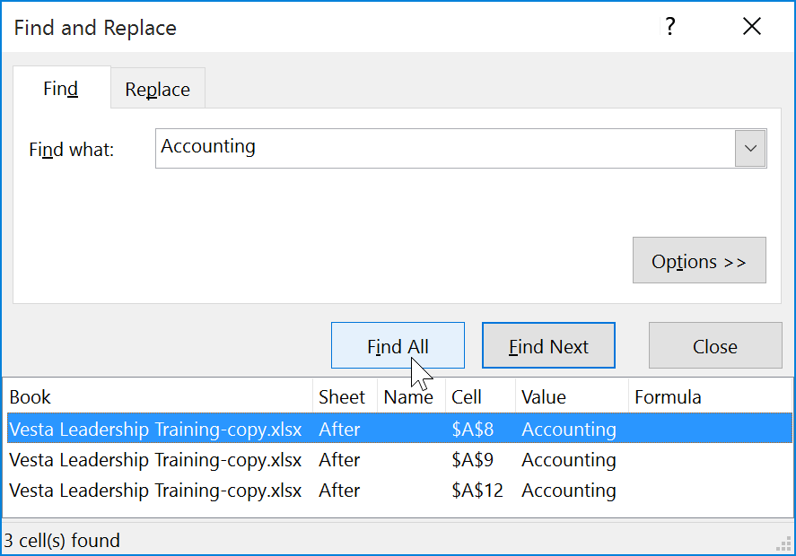
5. Khi bạn hoàn tất, hãy nhấp vàoĐóngđể thoát khỏi hộp thoại Tìm và Thay thế.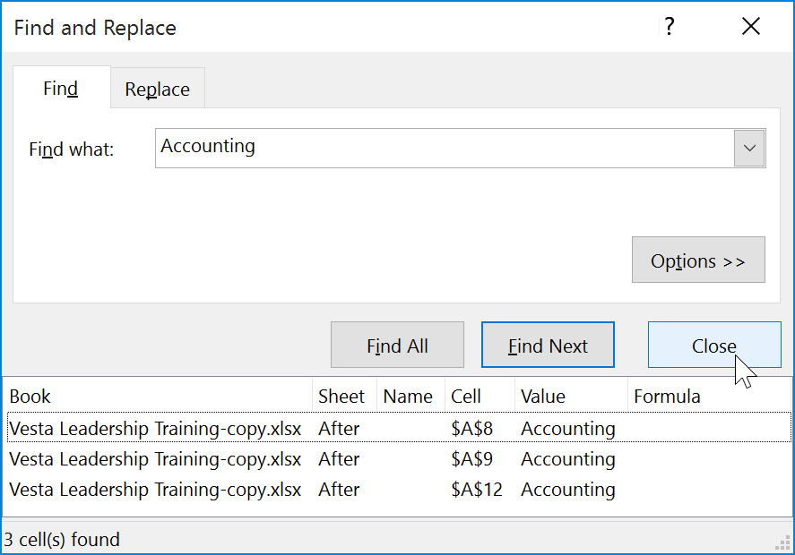
Bạn cũng có thể truy cập lệnh Tìm bằng cách nhấnCtrl+Ftrên bàn phím.
Nhấp vàoTùy chọnđể xem tiêu chí tìm kiếm nâng cao trong hộp thoại Tìm và Thay thế.
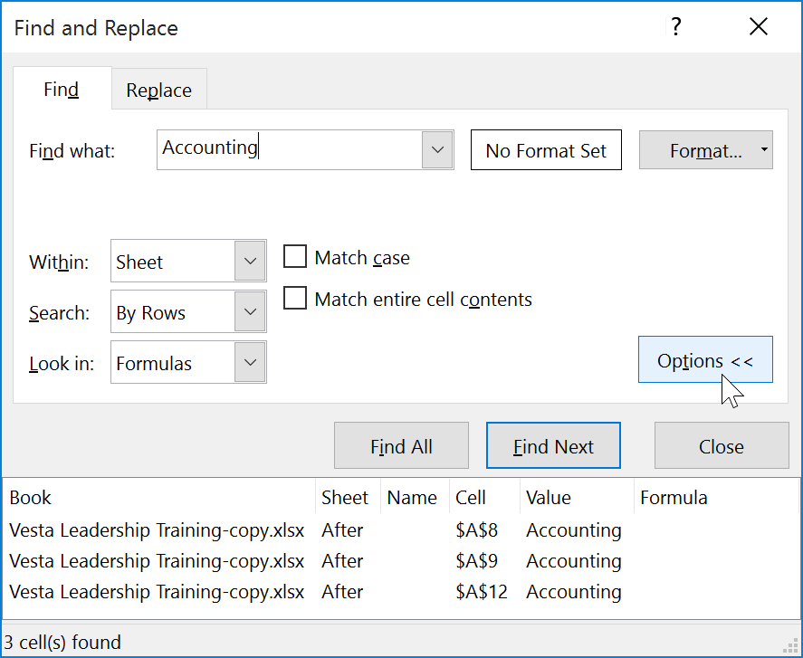
Để thay thế nội dung ô:
Đôi khi, bạn có thể phát hiện ra rằng mình đã liên tục mắc lỗi trong suốt sổ làm việc của mình (chẳng hạn như viết sai chính tả tên của ai đó) hoặc bạn cần đổi một từ hoặc cụm từ cụ thể bằng một từ hoặc cụm từ khác. Bạn có thể sử dụng tính năngTìm và Thay thếcủa Excel để thực hiện các sửa đổi nhanh chóng. Trong ví dụ của chúng tôi, chúng tôi sẽ sử dụng Tìm và Thay thế để sửa danh sách tên bộ phận.
- Từ tabTrang chủ, nhấp vào lệnhTìm & Chọn, sau đó chọnThay thế...từ trình đơn thả xuống.
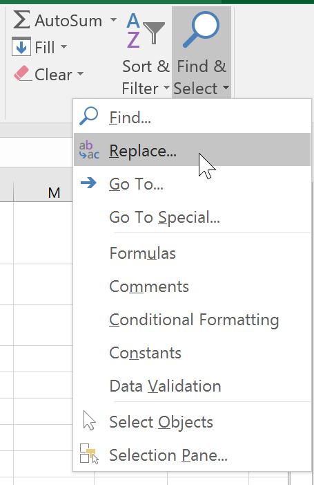
2. Hộp thoạiTìm và Thay thếsẽ xuất hiện. Nhập văn bản bạn muốn tìm vào trườngFind what:. 3. Nhập văn bản bạn muốn thay thế vào trườngThay thế bằng:, sau đó nhấp vàoTìm tiếp.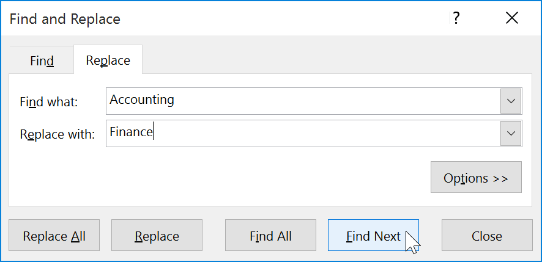
4. Nếu tìm thấy nội dung, ô chứa nội dung này sẽ đượcchọn. 5. Xem lạivăn bản để đảm bảo bạn muốn thay thế nó. 6. Nếu bạn muốn thay thế nó, hãy chọn một trong các tùy chọnthay thế. Việc chọnThay thếsẽ thay thế các phiên bản riêng lẻ, trong khiThay thế tất cảsẽ thay thế mọi phiên bản của văn bản trong toàn bộ sổ làm việc. Trong ví dụ của chúng tôi, chúng tôi sẽ chọn tùy chọn này để tiết kiệm thời gian.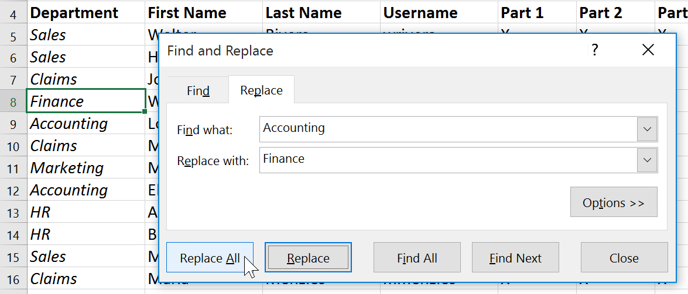
7. Một hộp thoại sẽ xuất hiện xác nhận số lần thay thế đã thực hiện. Nhấp vàoOKđể tiếp tục.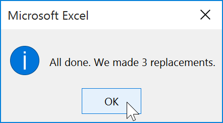
8. Nội dung ô đã chọn sẽ đượcthay thế.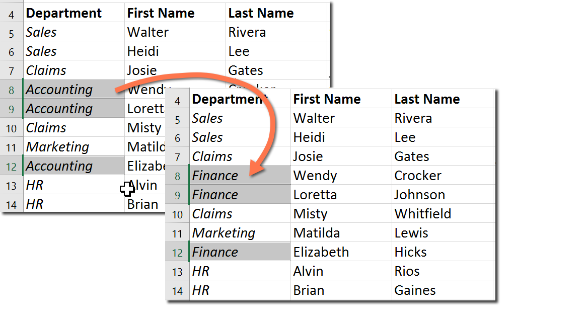
9. Khi bạn hoàn tất, hãy bấm Đóng để thoát khỏi hộp thoại Tìm và Thay thế.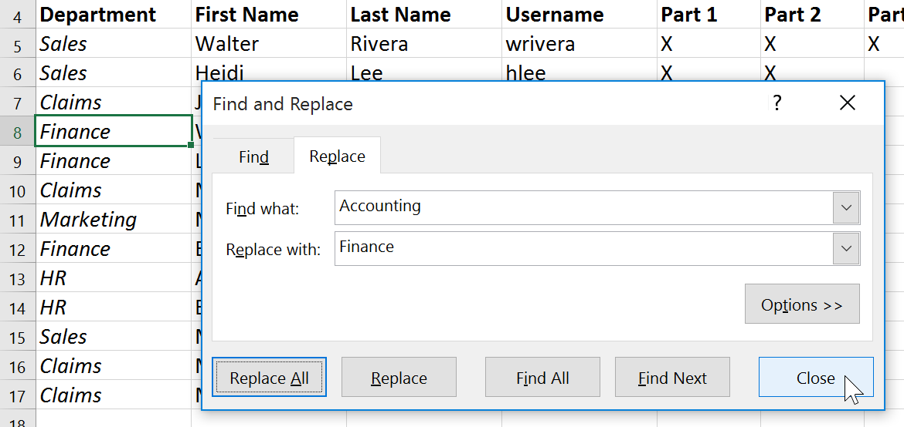
Nói chung, tốt nhất bạn nên tránh sử dụngThay thế tất cảvì nó không cung cấp cho bạn tùy chọn bỏ qua bất cứ điều gì bạn không muốn thay đổi. Bạn chỉ nên sử dụng tùy chọn này nếu bạn hoàn toàn chắc chắn rằng nó sẽ không thay thế bất cứ thứ gì bạn không mong muốn.
Thử thách!
- Mở sổ làm việc thực hành của chúng tôi.
- Nhấp vào tabThử tháchở phía dưới bên trái của sổ làm việc.
- Crystal Lewis kết hôn và đổi họ của mình thành Taylor. Sử dụngTìm và thay thếđể thay đổi họ của Crystal từLewisthànhTaylor. Hãy cẩn thậnchỉthay đổi họ của Crystal!
- Tìm và thay thếBiobằngBiology. Hãy cẩn thậnkhôngthay đổi chuyên ngành Kỹ thuật Y sinh!
- Sử dụngTìm và thay thế tất cảđể thay thế chuyên ngànhVật lýthànhKhoa học vật lý.
- Khi bạn hoàn tất, bảng tính của bạn sẽ trông như thế này:

/en/excel/kiểm tra chính tả/nội dung/